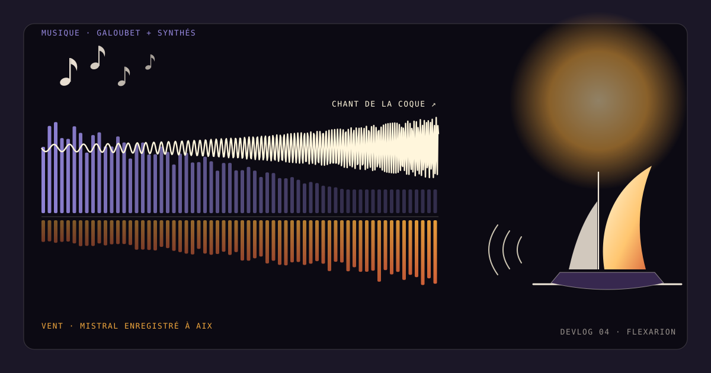

Devlog 04 — La bande-son de Maestral : enregistrer le mistral pour faire chanter la Cigale
Six heures de mistral enregistrées autour d’Aix-en-Provence, un galoubet, deux synthétiseurs et une coque qui chante avant la rafale : comment Flexarion fabrique un son qui suit le vent.

Dans le devlog 03, Lina vous racontait la leçon numéro un de notre premier playtest : presque personne ne réduisait la voilure avant une rafale. Notre réponse tenait en une phrase : « la coque de la Cigale chantera plus aigu quand le grain approche ». Une phrase facile à écrire, et un mois de travail pour moi. Voici comment le son de Maestral est passé de décor à instrument de navigation.
Enregistrer le vrai mistral
Dans Maestral, le vent stellaire n’existe pas. Le mistral, lui, souffle une bonne partie de l’année sur le pays d’Aix. Plutôt que de synthétiser un vent « de science-fiction », nous sommes donc allés chercher le nôtre :
- sur le plateau du Cengle, au pied de la Sainte-Victoire, pour le souffle large et continu qui sert de fond sonore à l’archipel ;
- sur les pontons d’un port de la côte, pour le claquement des drisses contre les mâts : c’est devenu le cliquetis du gréement de la Cigale ;
- dans une vieille maison du centre d’Aix, pour les volets qui grincent et les sifflements sous les portes, qui donnent leur voix aux épaves.
Le matériel est modeste : un enregistreur portable, deux micros et une bonnette en fausse fourrure, sans laquelle un micro sous le mistral n’enregistre qu’un grondement. En trois sorties, nous avons rapporté six heures de prises, dont une quarantaine de sons ont survécu au tri.
La coque qui chante : un son qui annonce le danger
Le chant de la coque est la pièce maîtresse du son de Maestral. Il est construit en trois couches : un bruissement grave (le vent calme), un sifflement (le vent soutenu) et un chant aigu, presque musical, qui n’apparaît qu’à l’approche d’une rafale.
L’astuce, c’est que la coque ne réagit pas au vent actuel, mais au vent à venir. La simulation qu’Idriss décrit dans le devlog 01 calcule déjà le champ de vent quelques secondes à l’avance : il suffisait de brancher le son dessus. Dans Godot, cela tient en quelques lignes :
# Appelée à chaque image par la Cigale
func chant_de_coque(vent_prevu: float) -> void:
# vent_prevu : force du vent dans 2 secondes, fournie par la simulation
var tension := clampf(inverse_lerp(8.0, 30.0, vent_prevu), 0.0, 1.0)
$Chant.pitch_scale = lerpf(0.9, 1.5, tension) # jusqu'à une quinte au-dessus
$Chant.volume_db = linear_to_db(lerpf(0.05, 1.0, tension))
$Bruissement.volume_db = linear_to_db(1.0 - 0.7 * tension)Résultat : environ deux secondes avant une rafale, le chant monte d’une quinte. C’est juste assez pour réduire la voilure, à condition d’écouter. Lors d’un test interne avec douze joueurs, la proportion de rafales « anticipées » est passée d’une sur cinq à près d’une sur deux. Nous vérifierons ce chiffre à plus grande échelle lors de la démo publique.
Une musique qui s’efface devant le vent
La musique de Maestral mêle deux mondes : des synthétiseurs analogiques pour l’espace, et le galoubet, la petite flûte à trois trous de la tradition provençale, souvent jouée avec le tambourin. Son timbre un peu sifflant se marie étonnamment bien avec le vent.
Chaque morceau est découpé en quatre pistes superposées. Par temps calme, on entend tout. Quand le vent forcit, les pistes disparaissent une à une, de la plus mélodique à la plus sourde, jusqu’à ce qu’il ne reste que le vent et la coque. Nous ne voulions pas d’une musique « de tempête » héroïque : dans Maestral, le moment le plus dangereux est aussi le plus silencieux.
« Si la musique couvre le vent, le joueur navigue à l’aveugle. Alors elle se tait. »
Les fanaux ont chacun leur note
Dernier détail, notre préféré : chaque fanal rallumé ajoute une note à un thème de cinq notes. Au fil de l’aventure, la mélodie principale de Maestral se reconstruit, fanal après fanal. Les joueurs les plus attentifs pourront deviner, à l’oreille, combien de phares il leur reste à rallumer dans une région.
Le son, sans exclure personne
Un signal uniquement sonore laisserait de côté les joueurs sourds ou malentendants, et ceux qui jouent sans le son. Chaque indice du chant de la coque a donc un équivalent visible ou tactile :
- le santon vigie qui s’agite sur le pont à l’approche d’une rafale ;
- des sous-titres décrivant les sons importants (« [la coque siffle de plus en plus aigu] ») ;
- une option qui traduit le chant de la coque en vibrations de la manette.
Et ensuite ?
Le prochain devlog sera consacré à la fonctionnalité la plus demandée par nos testeurs : l’annotation libre de la carte de bord. D’ici là, vous pouvez découvrir l’univers complet de Maestral ou l’équipe du studio Flexarion. Et si vous voulez entendre la coque chanter avant tout le monde, inscrivez-vous au prochain playtest.